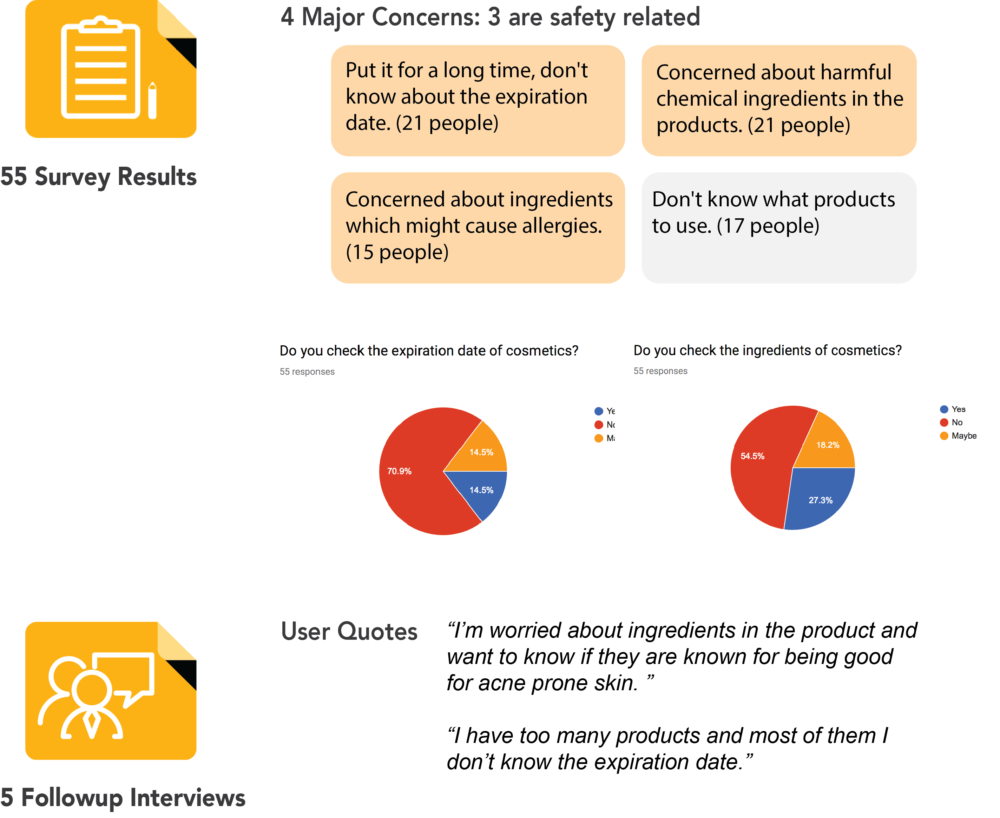

Kosmos An app that manages your cosmetics
Kosmos is a iPhone App designed for people who use cosmetics products to help them find and use safe beauty products. It attempts to allow users to keep track the expiration date of all their beauty products, organize their own products more efficiently, help them to identify the different ingredients and give them general tips of beauty products to further allow them to find and use more natural and safe products. This is my capstone project, I collaborated with 3 person student group and I am the lead UX/UI designer in the team.
Introduction Video
Problem
More and more people are using makeup or skincare products to not only be more attractive but also to protect and improve their skin quality. However, since most of these products contain chemical elements in them, there are not 100% safe for human body and could lead to some negative effects if not use properly. Just like food has expiration dates, so as cosmetics products which has been ignored by many users of the products. Studies have shown that expired beauty products would stop working and even give users a risk of infection, or even cause skin irritation.
As people tend to have more and more cosmetics products, ranging from skincare, eyeliner to lipstick and foundation, sometimes it is just hard to keep track of the expiration date of each product and the time to acquire new products once the old one is tossed. Besides more and more people today focus more on the ingredients of the products and hope to find more natural products that will reduce the risk of any harms. So being able to understand the different ingredients and identify the toxic ones are important for many users and will affect their choices in the products.
Goals & Outcomes
The overall goal is to help users to find and use safe beauty products. Our solution will allow users to keep track the expiration date of all their beauty products, organize their own products more efficiently, help them to identify the different ingredients and give them general tips of beauty products to further allow them to find and use more natural and safe products. At last, we would give users recommendations of the beauty products based on their using habits and fashion trends when their products are about to expire.
Target audiences
- People who use makeup and beauty products.
- People who want to know the ingredients of makeup and beauty products.
- People who want to organized and keep track of all the beauty products they owned.
- People who want to use safe and natural makeup and beauty products products.
Design Process
Research
User research: Survey
For user research, we mainly did surveys and interviews to get to know more about our users. Couple things we learned through research are:
- Many people have hard times finding the right product to reduce the risk of allergy or other negative effects.
- Many people are concerned about the potential bad consequences that might happen when using bad cosmetics products.
- 70% people who took the survey said they don’t check expiration date of the product, since many of them don’t acknowledge the negative effects of using expired products.
- Many factors affect people’s choice of cosmetic product purchasing, cost, using habits and recommendation from others are the main ones, while some users focus more about acne, or whether there was any animal test.
- Through the survey we did, we found that distribution of different skin types is pretty equal.
- Even though 59.3% people said they would use a product until finish it, only 11.1% people actually use up their cosmetic products before the expiration.
- Majority users begin to use the product right after purchases.
- There are mainly safety concerns about using cosmetics products and ways to correctly apply the products.
Market Research
The global cosmetics market is forecasted to reach $675 billion by 2020. There is more demand for cosmetics than ever before with more people wanting to spruce up their lifestyle with the use of makeup, fragrances, and other cosmetics. Additionally, market research has shown that consumers are becoming more health conscious about the long term effects cosmetics might have on their bodies and so the demand for organic products is increasing. We found that the cosmetics market is growing fast and that there is a demand by users to find more natural cosmetics that are safe for their bodies in the long run. This gives us confidence that there is a target audience for our app that is interested in finding safe products in an aggregate cosmetic tracker.
Landscape Research
The global cosmetics market is forecasted to reach $675 billion by 2020. There is more demand for cosmetics than ever before with more people wanting to spruce up their lifestyle with the use of makeup, fragrances, and other cosmetics. Additionally, market research has shown that consumers are becoming more health conscious about the long term effects cosmetics might have on their bodies and so the demand for organic products is increasing. We found that the cosmetics market is growing fast and that there is a demand by users to find more natural cosmetics that are safe for their bodies in the long run. This gives us confidence that there is a target audience for our app that is interested in finding safe products in an aggregate cosmetic tracker.
For full analysis, view pdf
Personas
Based on our design problems, we created three personas and scenarios that feature personas using our product under different occasions, and with different purposes. I also created a anti persona to help us identify people we don’t want to target and informs the content that we need to create for the people you do want to target.

Storyboards
Based on personas, in order to get a better sense of under what scenarios people will use our application, I created storyboards for each persona. This is one of the example from storyboards I made for Alice.

Ideation
After creating storyboards, we discussed together and thought about what features we want to implement in order to address the biggest problems we want to solve for targeted users, which is to use the safe and fresh cosmetics. I thought a list would be helpful to keep everything in track and I also added allergy function to it so users are able to filter unsafe products. One feature I would like to emphasize here is that the scan feature since I don’t want to users having a pain to input products.
Paper Prototype
Platform Consideraton
We plan to develop our mobile app for iOS 10 and have an informational website about our app. We plan to use Firebase for our backend needs. One requirement we have is getting the data for cosmetic products through some API, so far we have not found a reliable one. A couple of cosmetic databases we have found are beautypedia and EWG’s Skin Deep. Beautypedia has many products that can be easily searched for and it includes a list of ingredients within each product, link below. Skin Deep is even more thorough with its ingredients because it shows what effects they may have on the body and gives a safety rating as well.
Based on those ideated features, I came up with a paper prototype. I followed the basic IOS app design of bottom nav bar design. And I also emphasized the main adding products to the list feature by placing it at the very center.

Low-Fidelity Prototype
After paper prototype, I made a low-fidelity prototype, the main thing changed is having process bars to show the expiration date to give people a strong visual impression of time. I also added “open” feature to more accurately track the product and provide better estimation for users. I also categories products so people would view different genres.
Usability Testing
I made the low-fidelity prototype interactive and conducted the first round usability testing with the other capstone groups. And I noticed several problems. For example, I noticed that people think it was not necessary to view different categories of makeup since they thought they don’t have that many products in each category.

Moodboard/UI Design
For our moodboard, the main theme here is cheerful and relaxing. The goal of our app is to help users to find, use and organize their matching cosmetics products. Since this is a helper tool, we hope the users can have a relaxing experience, and no more panic about allergic affection or other negative concerns relate to their makeup usage. Besides that, since people use makeup products to look prettier and more confident, we want to emphasize that and have bring the cheerful and positive energy through our app. That’s why we created this mood board, hoping to create a seamless easy experience for users and give them a positive and joyful boost every time they use the app.
High-fidelity mockups & Interaction Flow
This is the current user flow for kosmos. I made the high-fidelity mockup based on the moodboard and the low-fidelity prototype. The longest flow for now is to add a new product to the list, however, other features are easily accessed through one tap.
Epics / Stories for key functionality
Epic 01: Provide options for users to add new cosmetics
Main Features
- Ability to scan barcode
- Ability to search by name
- Ability to add different products to user’s list
User Story
- As a frequent cosmetics user, I want to quickly add the products I bought so that I don’t forget them or take up too much of my time to track them.
- As a cosmetics user who buys products from different brands, I want to find a way to easily keep track of them, so that even if there is no barcode on the product I can still know the details of the product.
Epic 02: Allow user to check details of a product
Main Features
- Ability to see ingredients
- Ability to get ingredients’ alerts
- Ability to view instruction of a specific product
- Ability to find alternative products
User Story
- As a beginner in makeup, I want to know how to apply the product correctly, so that I can look good and don’t waste any of the products.
- As a makeup blogger, I want to find more alternatives, so that I can test them out and share them with my followers.
- As a user who has sensitive skin, I want to know the key ingredients in the product, so that I can choose the right product without damaging my skin.
- As a cosmetics user, I want to know whether the product is good for acne prone skin, so that I can find the right product that I feel comfortable using.
Epic 03: Provide expiration date information to users
Main Features
- Ability to calculate expiration date, either Expiration Date or Period after opening
- Send alert to user
- Ability to mark whether the product is open or not
- Ability to mark whether the product is finished or not
User Story
- As a user who owns a bunch of backup cosmetics products, I want to be able to keep track of when I actually open a new bottle, so that I don’t waste any of the old but still be able to enjoy the new one.
- As a college student who has a lot of work every day, I want to get notification if one of my skin care products is about to expire, so that I don’t need to remember all these details but still be able to finish the product。
Here is an interactive prototype of the app. Feel free to play around with it.
Future directions
At the end of this capstone project, we finished the basic development of Kosmos App. However, due to time and source limitations, we couldn't implement it and push to the app store. What might happen in the future is I will keep working on revising the design and hopefully work with other engineers to develop this app.